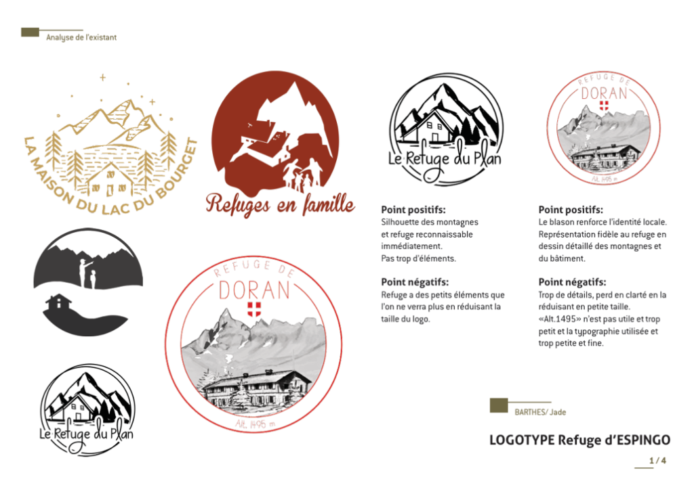
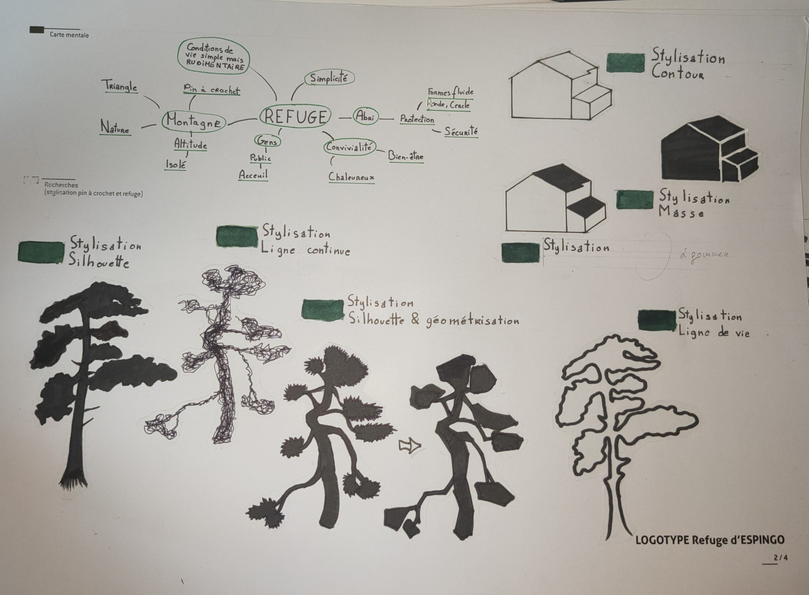
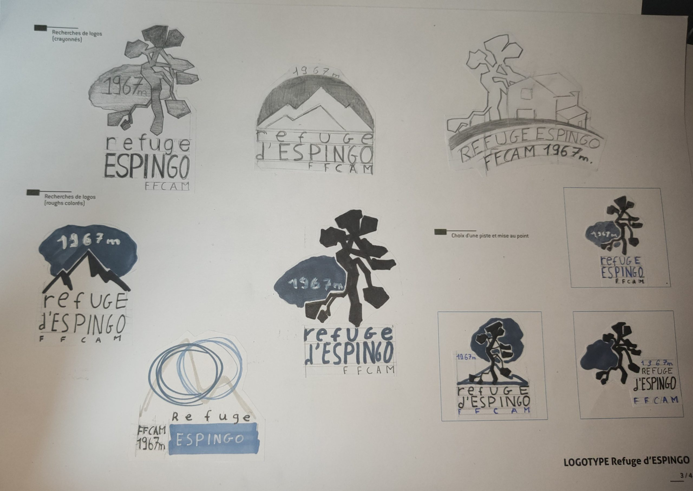
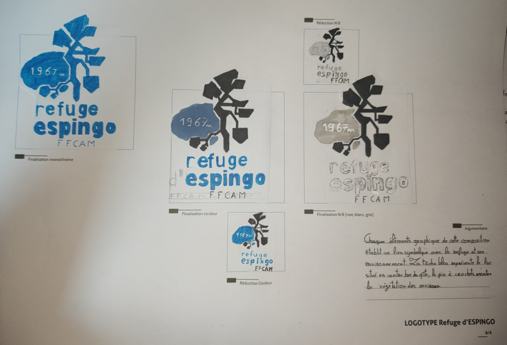
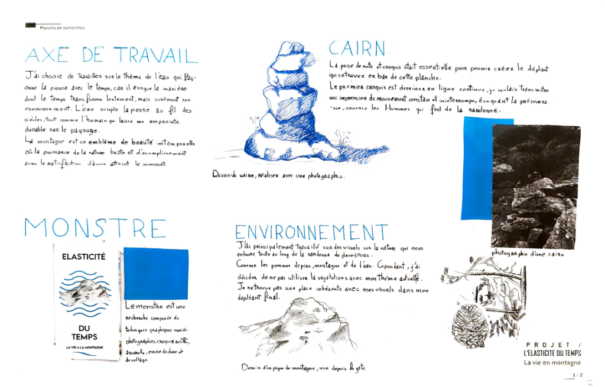
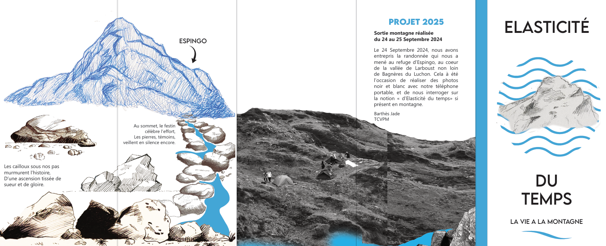
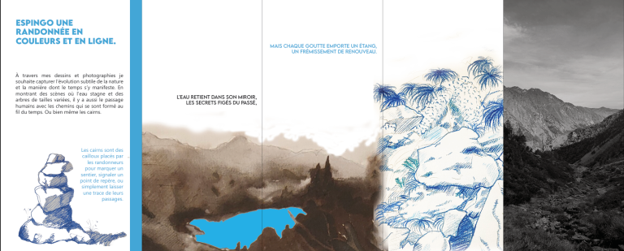

L'essence du projet
Espingo est une exploration de la dualité entre l'Homme et son environnement. Ce projet illustre comment l'humain façonne la terre avec la même patience que l'eau façonne la roche. À travers ce carnet de voyage pluridisciplinaire, j'ai cherché à capturer ce dialogue entre la matière brute des Pyrénées et l'empreinte graphique que nous y laissons.
I. L'Immersion : La Randonnée
Une courte vidéo documentant l'ascension et l'atmosphère unique de la haute montagne, là où le mouvement de l'homme rencontre l'immobilité des cimes.
Images & Edit © Jade Barthes
II. Le Regard : Planche Contact
Sélection de clichés capturés durant le séjour : un témoignage visuel de notre passage dans ce paysage minéral.
 Photographie
Photographie
III. La Création : Méthodologie du Logo
Le processus de création du logo a suivi une démarche rigoureuse en quatre planches. L'objectif était de traduire la force de la montagne dans une identité visuelle épurée.

Planche 1 / BenchmarkAnalyse des codes visuels des refuges existants.

Planche 2 / Recherches
Planche 3 / Recherches
Proposition FinalisteStatut : Proposition soumise et finaliste. Le logo symbolise la rencontre entre la géométrie humaine et le chaos de la pierre.
IV. L'Application : Dépliant Pédagogique
Conception d'un dépliant à 4 volets, pensé comme un guide organique pour le randonneur.

Planche
Dépliant Recto
Dépliant VersoPrésentation des planches à plat, soulignant la continuité du tracé entre le recto et le verso.
Supports Finalisés
L'aboutissement de ce projet est un carnet de bord éditorial complet, fusionnant reportage sensible et rigueur graphique.